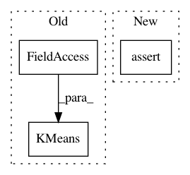

3250ffb785fed45712868fd618929a3015639b1c,sklearn/cluster/tests/test_k_means.py,,test_weighted_vs_repeated,#,802
Before Change
rng = np.random.RandomState(0)
sample_weight = rng.randint(1, 5, size=n_samples)
X_repeat = np.repeat(X, sample_weight, axis=0)
estimators = [KMeans(init="k-means++", n_clusters=n_clusters,
random_state=42),
KMeans(init="random", n_clusters=n_clusters,
random_state=42),
KMeans(init=centers.copy(), n_clusters=n_clusters,
After Change
km_repeated = clone(km).fit(X_repeat)
assert_array_equal(km_repeated.labels_, repeated_labels)
assert_allclose(km_weighted.inertia_, km_repeated.inertia_)
assert_allclose(_sort_centers(km_weighted.cluster_centers_),
_sort_centers(km_repeated.cluster_centers_))
In pattern: SUPERPATTERN
Frequency: 3
Non-data size: 3
Instances
Project Name: scikit-learn/scikit-learn
Commit Name: 3250ffb785fed45712868fd618929a3015639b1c
Time: 2020-07-16
Author: 34657725+jeremiedbb@users.noreply.github.com
File Name: sklearn/cluster/tests/test_k_means.py
Class Name:
Method Name: test_weighted_vs_repeated
Project Name: scikit-learn/scikit-learn
Commit Name: 3250ffb785fed45712868fd618929a3015639b1c
Time: 2020-07-16
Author: 34657725+jeremiedbb@users.noreply.github.com
File Name: sklearn/cluster/tests/test_k_means.py
Class Name:
Method Name: test_transform
Project Name: scikit-learn/scikit-learn
Commit Name: 3250ffb785fed45712868fd618929a3015639b1c
Time: 2020-07-16
Author: 34657725+jeremiedbb@users.noreply.github.com
File Name: sklearn/cluster/tests/test_k_means.py
Class Name:
Method Name: test_unit_weights_vs_no_weights